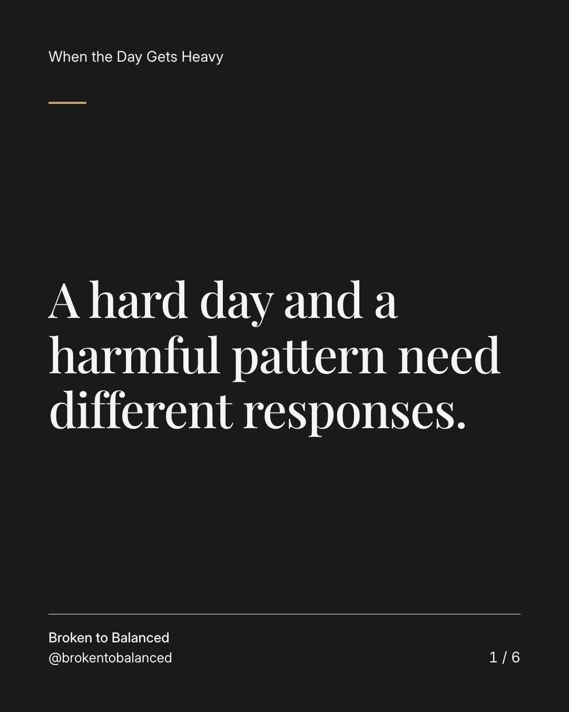
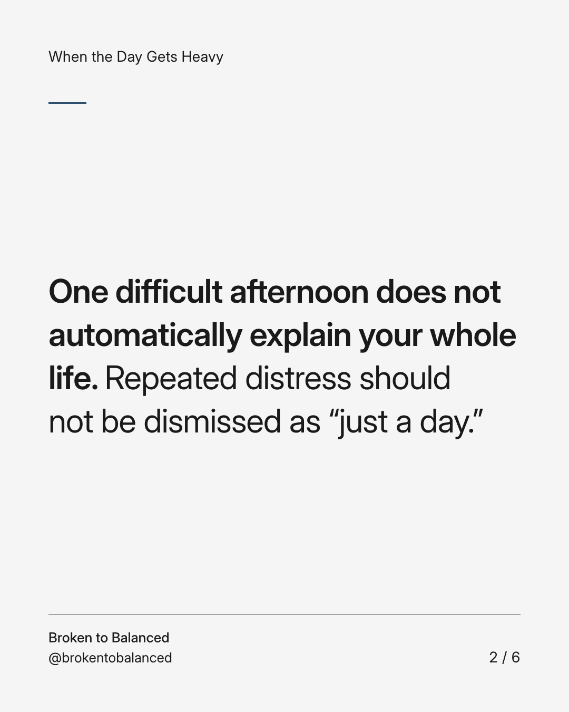
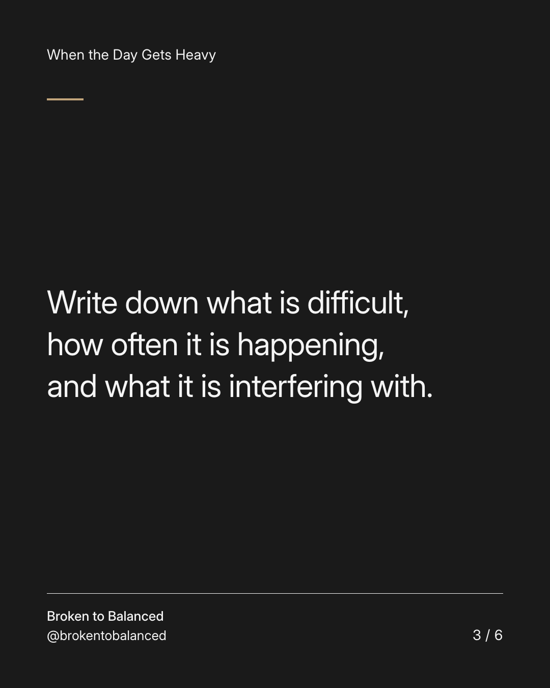
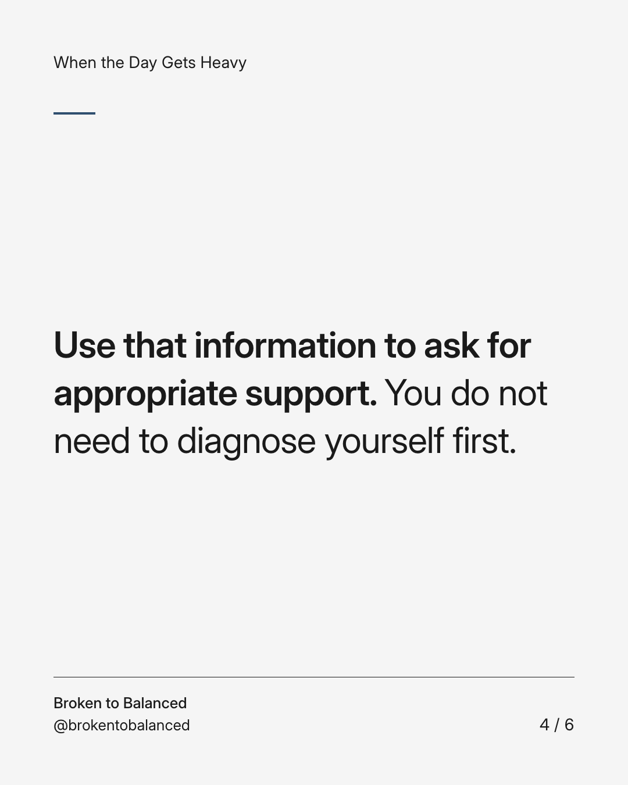
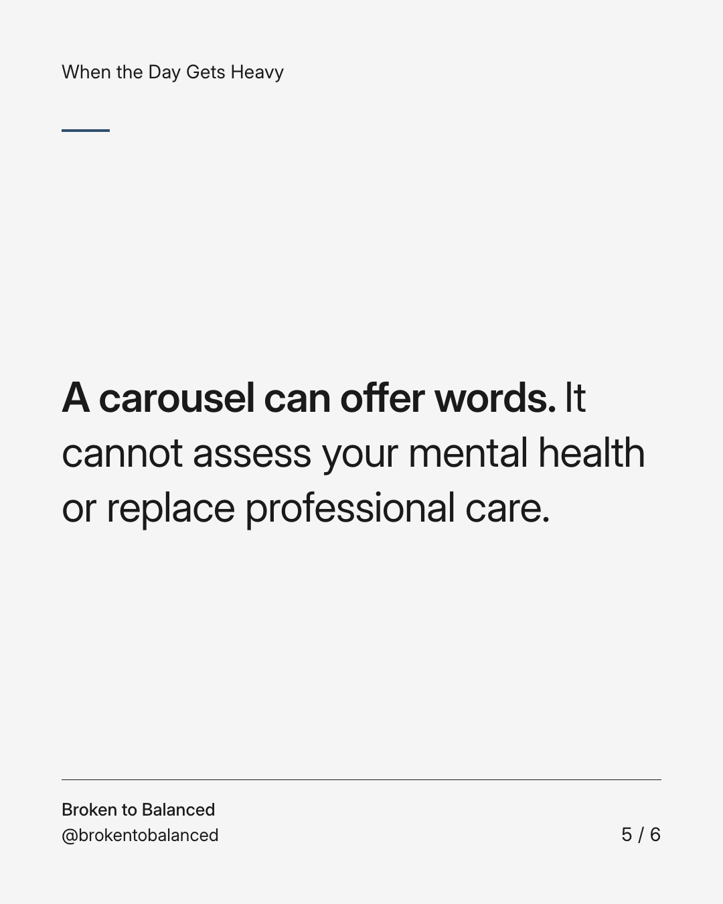
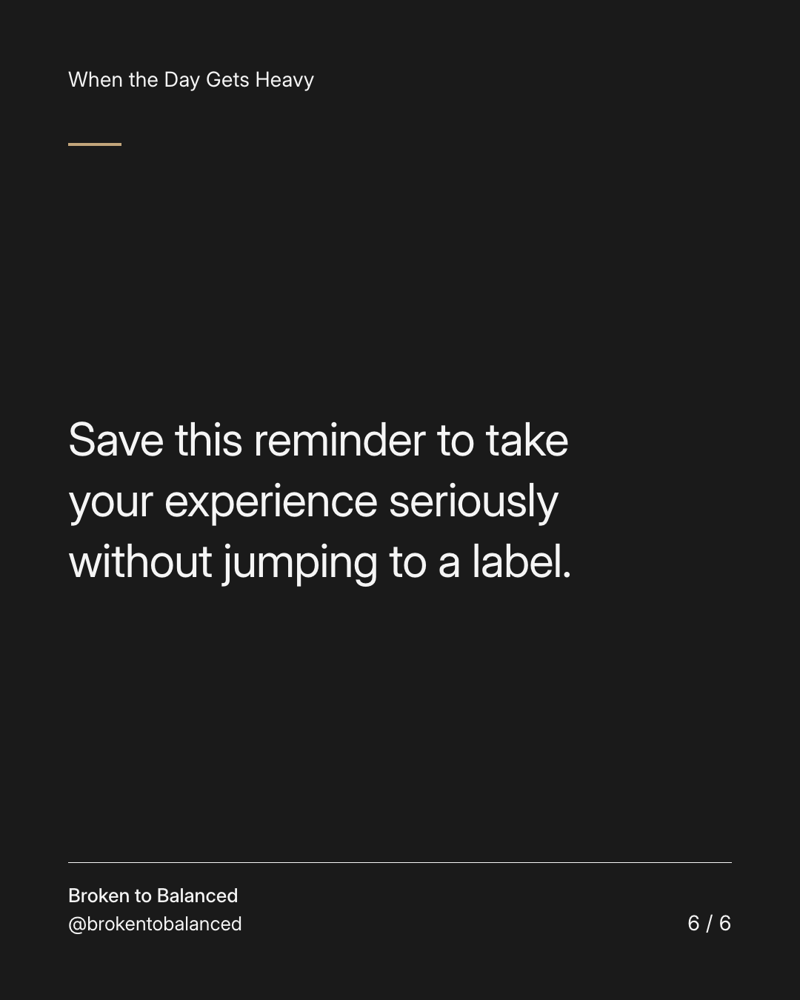

Exact text and accessibility text
A hard day and a harmful pattern need different responses.
Slide 1 of 6. A hard day and a harmful pattern need different responses.


Exact text and accessibility text
One difficult afternoon does not automatically explain your whole life. Repeated distress should not be dismissed as “just a day.”
Slide 2 of 6. One difficult afternoon does not automatically explain your whole life. Repeated distress should not be dismissed as “just a day.”


Exact text and accessibility text
Write down what is difficult, how often it is happening, and what it is interfering with.
Slide 3 of 6. Write down what is difficult, how often it is happening, and what it is interfering with.


Exact text and accessibility text
Use that information to ask for appropriate support. You do not need to diagnose yourself first.
Slide 4 of 6. Use that information to ask for appropriate support. You do not need to diagnose yourself first.


Exact text and accessibility text
A carousel can offer words. It cannot assess your mental health or replace professional care.
Slide 5 of 6. A carousel can offer words. It cannot assess your mental health or replace professional care.


Exact text and accessibility text
Save this reminder to take your experience seriously without jumping to a label.
Slide 6 of 6. Save this reminder to take your experience seriously without jumping to a label.
Exact caption
Plain-text fallback: select and copy the caption.